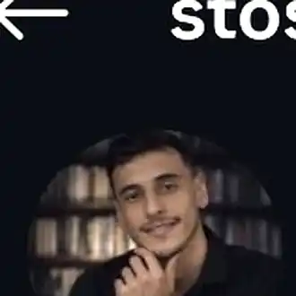

01
Henrique Stoski · Videomaker · Cerquilho — SP
Transformo momentos em filmes que ficam.
Filmes de casamento, eventos e produções audiovisuais com narrativa, ritmo e emoção.
Casamentos
Eventos
Conteúdo para marcas
Não é só gravar.
É transformar um momento em um filme que continua vivo.
Narrativa, ritmo, som, luz e detalhe. Cada filme nasce para preservar a atmosfera do momento e fazer a história ser sentida outra vez.
Showreel
Veja a história em movimento.
Um recorte do estilo, ritmo e olhar da Stoski Films.
Portfólio
Trabalhos em destaque
 02
02Serviços
Vídeo com intenção.
Da captação ao corte final, cada projeto recebe uma linguagem pensada para a história que precisa ser contada.
Filmes de casamento
Um filme autoral para reviver a emoção, os detalhes e a atmosfera do grande dia.
Eventos & celebrações
Captação dinâmica para transformar encontros, festas e experiências em narrativa.
Reels & vídeos comerciais
Conteúdo vertical e promocional com ritmo, identidade e impacto para marcas e redes sociais.
Edição & pós-produção
Montagem, cor, áudio, ritmo e acabamento para transformar suas gravações em um filme completo.
Produção audiovisual
Do planejamento à entrega: criação, captação e edição de vídeos pensados para contar histórias e fortalecer marcas.

Henrique Stoski
Videomaker
Por trás da câmera
A arte de ver diferente.
Stoski Films é o olhar de Henrique Stoski transformado em movimento, som e narrativa.
Com base em Cerquilho, São Paulo, Henrique trabalha com captação e edição de vídeo para criar filmes que preservam mais do que a imagem de um momento: preservam a sensação.
@stoski_films ↗Cada vídeo é construído para contar uma história, não apenas juntar cenas.
Olhar atento para emoção, movimento, luz, som e detalhes que fazem diferença.
Edição, ritmo e cor trabalhando juntos para dar identidade ao filme final.
Como funciona
Simples do primeiro contato à entrega.
- 01
Conte sua ideia
Envie a data, o horário, o local e o que você está planejando.
- 02
Receba o orçamento
Henrique verifica a disponibilidade e entende os detalhes do trabalho.
- 03
Confirme o projeto
Com tudo alinhado, a data e o formato do serviço são confirmados.
- 04
Viva o momento
A experiência acontece; depois, o material passa por seleção, montagem, cor e acabamento até a entrega final.
“Filmes para sentir tudo de novo.”
Antes de chamar
Dúvidas rápidas.
As condições finais de cada projeto são alinhadas diretamente no orçamento, de acordo com o tipo de produção.
Atende fora de Cerquilho?
O atendimento é feito em Cerquilho e região. Para outros locais, disponibilidade e deslocamento são alinhados no orçamento.
Como funciona o prazo de entrega?
O prazo varia conforme o tipo e a complexidade do projeto e é informado antes da confirmação do serviço.
Posso pedir só edição de vídeo?
Sim. Edição & pós-produção faz parte dos serviços e pode ser avaliada separadamente conforme o material e o resultado desejado.
Enviar o formulário já reserva a data?
Não. O formulário organiza as informações e abre o WhatsApp. A data só é considerada confirmada depois do alinhamento direto com Henrique.
Vamos criar algo juntos?
Solicite seu orçamento.
Conte os detalhes do que você imagina. O envio não reserva a data automaticamente; a disponibilidade é confirmada depois do contato.
Instagram@stoski_films↗ WhatsApp+55 15 99741-1289↗